Research themes
We are a research group in the School of Energy Science and Engineering at IIT Kharagpur, working from interfacial physics to validated energy technologies: passive cooling with hydrogels and phase-change materials, physics-informed machine learning, energy-storage materials, nanoscale water and ion transport for desalination, thermal management, electrokinetic energy harvesting, and multiphase and droplet flows.
Passive Cooling, Solar PV and Buildings
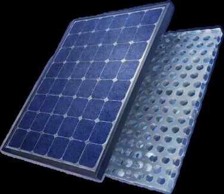
Interfacial ideas scale up to buildings and solar plants. We develop dual-function hydrogels for passive photovoltaic cooling and hybrid hydrogel–thermoelectric coolers, phase-change materials for PV panels and direct-gain walls, water-cooled and retrofitted glass façades, machine-learning-guided façade design, rooftop PV with battery dispatch, and pathways to net-zero energy buildings.
12 related publications
- Cover Feature: Dual‐Function Hydrogel Synthesis for Passive Photovoltaic Cooling for Climate‐Resilient Solar Infrastructure (Sol. RRL 6/2026) Solar RRL, 2026
- Dual‐Function Hydrogel Synthesis for Passive Photovoltaic Cooling for Climate‐Resilient Solar Infrastructure Solar RRL, 2026
- Energy performance of a trifurcated channel water cooled glass facade for building cooling Energy and Buildings, 2026
- Sustainable Thermal Solutions: Wind‐Enhanced Hybrid Hydrogel‐Thermoelectric Architecture for Self‐Regulating Cooling and Energy Recovery Advanced Sustainable Systems, 2026
- Sustainable Thermal Solutions: Wind‐Enhanced Hybrid Hydrogel‐Thermoelectric Architecture for Self‐Regulating Cooling and Energy Recovery (Adv. Sustainable Syst. 3/2026) Advanced Sustainable Systems, 2026
- Tariff-Responsive Battery Dispatch for Residential Rooftop PV Systems: Cost Reduction and Grid Relief Under Time-of-Use Pricing 2026 4th Odisha International Conference on Electrical Power Engineering, Communication and Computing Technology (ODICON), 2026
- Comparative Analysis of Power Performance Enhancement in Solar PV Systems Using Phase Change Materials Across Distinct Indian Climate Zones 2025 IEEE 4th International Conference on Smart Technologies for Power, Energy and Control (STPEC), 2025
- Performance Evaluation of Amorphous Silicon Photovoltaics Integrated in Marine Structures: Impact of Submersion Depth and Thermal Management 2025 IEEE 4th International Conference on Smart Technologies for Power, Energy and Control (STPEC), 2025
Machine Learning for Transport
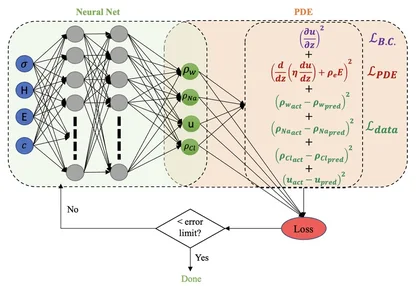
A thread running through the themes: neural networks trained on molecular simulations predict flow enhancement in nanochannels, physics-informed machine learning models electroosmotic flow for desalination membranes, and deep learning and data-driven optimisation are used for microchannel flows, battery cooling and building façades.
5 related publications
- Optimizing air-cooled battery thermal management through analytical heat generation modelling and numerical investigation of cooling performance Journal of Power Sources, 2026
- Physics-informed machine learning for electroosmotic flow in graphene nanochannels: Towards next-generation desalination membranes DESALINATION, 2026
- Interplay of roughness and wettability in microchannel fluid flows-Elucidating hydrodynamic details assisted by deep learning PHYSICS OF FLUIDS, 2024
- Mapping fluid structuration to flow enhancement in nanofluidic channels JOURNAL OF CHEMICAL PHYSICS, 2023
- Optimization of Building Facade for Passive Thermal Management: A Machine Learning Based Simulation Study for Kolkata, India PROCEEDINGS OF THE 2022 THE 9TH ACM INTERNATIONAL CONFERENCE ON SYSTEMS FOR ENERGY-EFFICIENT BUILDINGS, CITIES, AND TRANSPORTATION, BUILDSYS 2022, 2022
Energy Storage and Functional Materials
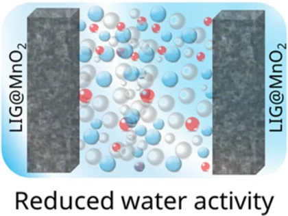
With materials collaborators we combine experiments with atomistic simulation to explain why new energy materials work: high-voltage and flexible pseudocapacitors with water-in-salt electrolytes, ZnS electrocatalysts for Li–S batteries, strain-activated metal–organic frameworks for water splitting, rubber–epoxy and liquid-phase-reinforced composites, and 3D-printed bio-inspired architectures.
7 related publications
- All-climate high-voltage MnO2 pseudocapacitor enabled by a molecularly crowded water-in-salt electrolyte Journal of Materials Chemistry A, 2026
- Interfacial molecular structuring governs mechanical performance in hybrid rubber–epoxy composites: Insights from experiments and atomistic simulations Composites Part A: Applied Science and Manufacturing, 2026
- Enhanced Polysulfide Regulation in Rechargeable Li-S Batteries with ZnS as Electrocatalyst: Experimental Validation and Interfacial Insights from Simulations CHEMISTRY-A EUROPEAN JOURNAL, 2025
- A 2.5 V In-Plane Flexi-Pseudocapacitor with Unprecedented Energy and Cycling Efficiency for All-Weather Applications SMALL, 2024
- Unveiling the Potential of Metal–Organic Frameworks: Nucleation-Induced Strain Activating Electrocatalytic Water Splitting ACS Sustainable Chemistry & Engineering, 2024
- Understanding the mechanics of complex topology of the 3D printed Anthill architecture OXFORD OPEN MATERIALS SCIENCE, 2022
- Liquid-phase reinforced metal matrix (LMM) composite with non-intuitive properties arXiv, 2020
Nanoconfined Fluids and Interfaces
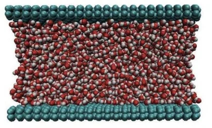
Below a few nanometres, the wall decides how a fluid flows. Using molecular dynamics, we study how wettability, surface chemistry, roughness and ions control slip, structuring, capillary filling and diffusion of water in graphene nanochannels, carbon nanotubes and nanopores — from the slippery-to-sticky transition of hydrophobic channels and anomalous flow in sub-nanometre and angstrom-scale confinement, to polymers and brushes in confinement, selective graphene membranes for desalination, and molecular transport of gases in semiconductor fabrication lines.
28 related publications
- Aggregation dynamics of molybdenum-based precursors in rarefied carrier gas mixtures under sub-nucleation conditions The Journal of Chemical Physics, 2026
- Atomistic calculations of the precursor molecular diffusivity at rarefaction: Understanding gas transport in semiconductor fabrication lines Results in Engineering, 2026
- Ion-specific symmetry-breaking at nanoconfined water-hydrocarbon interfaces JOURNAL OF COLLOID AND INTERFACE SCIENCE, 2026
- Molecular Friction Trumps Viscosity in Angstrofluidic Transport Small, 2026
- Physics-informed machine learning for electroosmotic flow in graphene nanochannels: Towards next-generation desalination membranes DESALINATION, 2026
- Anomalous interplay of confinement, wettability, and salt concentration toward diffusion of saline water in nanochannels The Journal of Chemical Physics, 2025
- Anomalous Water Flow in Sub-Nanometer Carbon Nanoconfinement SMALL, 2025
- Hydrodynamics inside brush decorated nano-confinements: an all-atom molecular dynamics study Nanoscale, 2025
Heat Transfer and Thermal Management
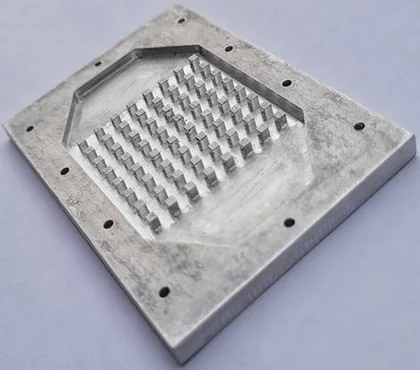
Compact devices need to shed heat efficiently. We design microchannel heat sinks — tree-like branching networks, porous and double-layered channels — and study nanofluids with shape-engineered particles, non-Newtonian coolants, boiling on functionalized graphene and entropy-generation minimization, with applications in electronics cooling and battery thermal management.
15 related publications
- Optimizing air-cooled battery thermal management through analytical heat generation modelling and numerical investigation of cooling performance Journal of Power Sources, 2026
- Passive augmentation of heat transfer and entropy generation minimization of a microchannel heat sink: A computational thermodynamic analysis Case Studies in Thermal Engineering, 2026
- Sustainable Thermal Solutions: Wind‐Enhanced Hybrid Hydrogel‐Thermoelectric Architecture for Self‐Regulating Cooling and Energy Recovery Advanced Sustainable Systems, 2026
- Sustainable Thermal Solutions: Wind‐Enhanced Hybrid Hydrogel‐Thermoelectric Architecture for Self‐Regulating Cooling and Energy Recovery (Adv. Sustainable Syst. 3/2026) Advanced Sustainable Systems, 2026
- Interplay of topography, wettability, and confinement controls boiling of water over functionalized graphene interfaces Energy, 2025
- A facile design of porous heat sink optimized thermodynamically for thermo-hydraulic performance APPLIED THERMAL ENGINEERING, 2024
- Interplay of geometry and shape-engineered-nanoparticles for efficient thermal performance in forced convection-based electronic cooling NUMERICAL HEAT TRANSFER PART A-APPLICATIONS, 2024
- Modulating fluid rheology and confinement toward augmenting the performance of a double layered microchannel heat sink HEAT TRANSFER, 2024
Electrokinetics and Nanofluidic Energy Harvesting

When a liquid moves past a charged surface it carries ions with it. We study this coupling between flow and charge — electric double layers, streaming potential, electroosmotic flow, ion rectification in polyelectrolyte- and zwitterion-coated nanochannels, programmable surface charge and DNA translocation — and use it to convert energy: electrokinetic energy harvesting over nanometre and sub-nanometre scales, carbonized cotton fibres with ultrahigh power density, and even electrokinetics in living plants.
15 related publications
- Field‐Unmasked Surface Charge Enables Programmable Nanofluidics Small, 2026
- Physics-informed machine learning for electroosmotic flow in graphene nanochannels: Towards next-generation desalination membranes DESALINATION, 2026
- Reconfigurable electrokinetic transport in charge-regulated Janus droplets Soft Matter, 2026
- Adaptive Polyzwitterion Coatings Enable Optimal Ion Rectification in Functionalized Nanochannels Analytical Chemistry, 2025
- Electrokinetic energy harvesting over nanometer and sub-nanometer scales Applied Physics Reviews, 2025
- Applied Electric Field Effects on Diffusivity and Electrical Double-Layer Thickness SMALL, 2024
- Flow rectification in a micro-nanochannel junction: Interplay of channel geometry and interfacial properties for directional transport EUROPEAN JOURNAL OF MECHANICS B-FLUIDS, 2024
- How does the diurnal biological clock influence electrokinetics in a living plant? PHYSICS OF FLUIDS, 2024
Multiphase and Non-Newtonian Flows
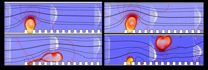
Many energy and process applications involve two fluids or fluids with complex rheology. We study core–annular flow for energy-efficient transport of heavy oil, jets in cross-flow, nanofluid-induced production of monodispersed droplets and plugs, pulsatile and rheology-controlled mixing in T-channels, roughness effects in microchannels, and particle transport in ice-covered channels.
13 related publications
- 2-D Numerical Investigation of horizontal core annular flow - Performance, Insights and Challenges JOURNAL OF INDUSTRIAL AND ENGINEERING CHEMISTRY, 2026
- Nanofluid induced droplet pinch-off in the jetting regime of liquid–liquid flow Physics of Fluids, 2026
- Compact microfluidic T-channel-mixer via tunable pulsatile actuation and fluid rheology Physics of Fluids, 2025
- Confinement and wettability-driven dispersed phase hydrodynamics in cross-flow jets at low velocity and density ratios Physics of Fluids, 2025
- Dynamics and applications of jets: a review focusing on the numerical and experimental approaches towards studying jet physics at micro and nanoscales Sādhanā, 2025
- Energy efficient pipeline transportation of heavy oil - A novel static device to stabilize and re-establish core annular flow Energy, 2025
- Hydrodynamic analysis of core annular flow with a viscoplastic lubricant International Journal of Multiphase Flow, 2025
- Nanofluid induced continuous production of monodispersed plugs during biphasic liquid flow in meso-scale CHEMICAL ENGINEERING AND PROCESSING-PROCESS INTENSIFICATION, 2025
Droplets, Wetting and Smart Surfaces
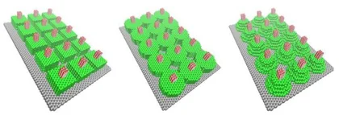
Surface texture and wettability decide what a drop does. We study drop impact and touchdown on patterned and oil-infused slippery surfaces, wettability-driven self-propulsion of droplets, draining and meniscus dynamics, bio-inspired fog and water harvesting, wettability-guided self-assembly of Janus particles, and microstructured surfaces that remove water from PEM fuel cells.
12 related publications
- Effective removal of water from a fuel cell: Engineering the gas-diffusion layer International Journal of Hydrogen Energy, 2026
- Nanofluid induced droplet pinch-off in the jetting regime of liquid–liquid flow Physics of Fluids, 2026
- Wettability-driven propulsion of a shear-thinning droplet on micro-textured and confined surfaces Microfluidics and Nanofluidics, 2026
- Transient meniscus response in tilted cuvettes: Role of surface tension and tilting rate Physics of Fluids, 2025
- Interplay of fluid rheology and micro-patterning toward modulating draining characteristics on an inclined substrate PHYSICS OF FLUIDS, 2024
- To spill or not: Short-time pouring dynamics of a toppled liquid bottle Physics of Fluids, 2024
- Damped Oscillatory Dynamics of a Drop Impacting over Oil-Infused Slippery Interfaces-Does the Oil Viscosity Slow it Down? LANGMUIR, 2023
- Draining of shear-thinning liquids from closed-top millichannels Physics of Fluids, 2023
Highlights 21
Projects
Current
Principal Investigator
- Digital Transformation Initiative for Enhanced Alumni Engagement and Global Branding of Energy Science and EngineeringSRIC, IIT Kharagpur
- Energy Alumni Relations and Global Interactive Engagement for SESE ExcellenceSRIC, IIT Kharagpur
- Institutional Data Management and Analytics Support for NEP 2020 Implementation (IoE Grant)IIT Kharagpur
- Multiphase flow in flexible conduits: stability and machine learningIndo-French Centre for the Promotion of Advanced Research (CEFIPRA)
- SHEETAL: Sustainable Hydrogel-enabled Energy Efficient Thermal Augmentation for Air Conditioning Load Reduction (Platinum Jubilee Innovation Challenge Grant, IoE)Sponsored Research and Industrial Consultancy (SRIC)
- Understanding heterogeneous vapour condensation and diffusion of gas mixtures in semiconductor equipment using molecular-level simulationLAM Research Corporation
Co-Principal Investigator
- Centre of Excellence on Energy Aware Urban InfrastructureScience and Engineering Research Board (SERB)
- Development of high-power grid-friendly conductive and static wireless chargers for electric vehiclesAnusandhan National Research Foundation (ANRF)
- Development of polymer composite-based strain sensorsMinistry of Electronics and Information Technology
- Kotak-IITM Save Energy Mission (KISEM) spoke at IIT KharagpurIIT Madras
Completed
Principal Investigator
- Micro Green Roofing (IMPRINT-2)Science and Engineering Research Board (SERB)
- Energy Harvesting using Droplets on Slippery SurfacesISIRD, SRIC
- Eco-friendly and Energy Efficient Storage of Bio-Hydrogen
- Solar Decathlon India Product Design
- An interdisciplinary approach to Sustainable Energy Transition to Equitable Systems: The Role of Solar Energy and Thermal Storage within the UK–India contexts
Co-Principal Investigator
- 3D printing of intricate fluid conduits using ceramic particles for fluid flowShell India Markets Pvt. Ltd.
- Confinement-induced Dynamics in Nanoscale Phase TransitionApex Committee of SPARC
- Indo-Korean Joint Network Centre on Computational MaterialsDepartment of Science and Technology (International Bilateral Cooperation Division)
Research facilities
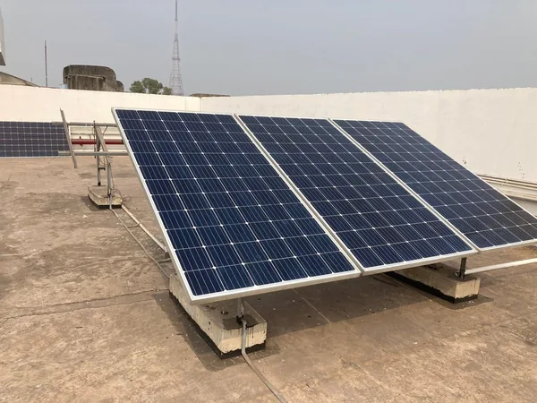
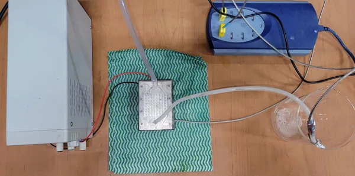
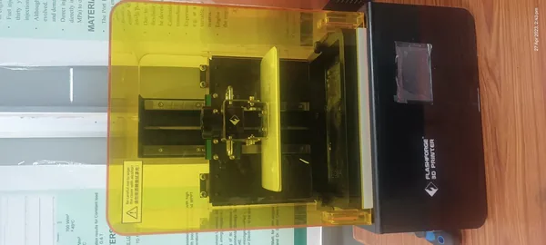
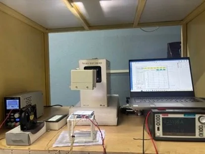
Also available: Central Research Facility (CRF), IIT Kharagpur.